Lead Sponsor
US$7,500
- Prominent logo placement on the workshop website and materials
- Recognition during the workshop opening and closing
- Named support for a student award or workshop activity, subject to mutual agreement
NeurIPS 2026 Workshop · Sponsorship Prospectus
VLM4RWD convenes the researchers and practitioners shaping dependable multimodal intelligence—from grounded perception and faithful reasoning to embodied agents, robotics, and autonomous systems.
Leading researchers from academia and industry
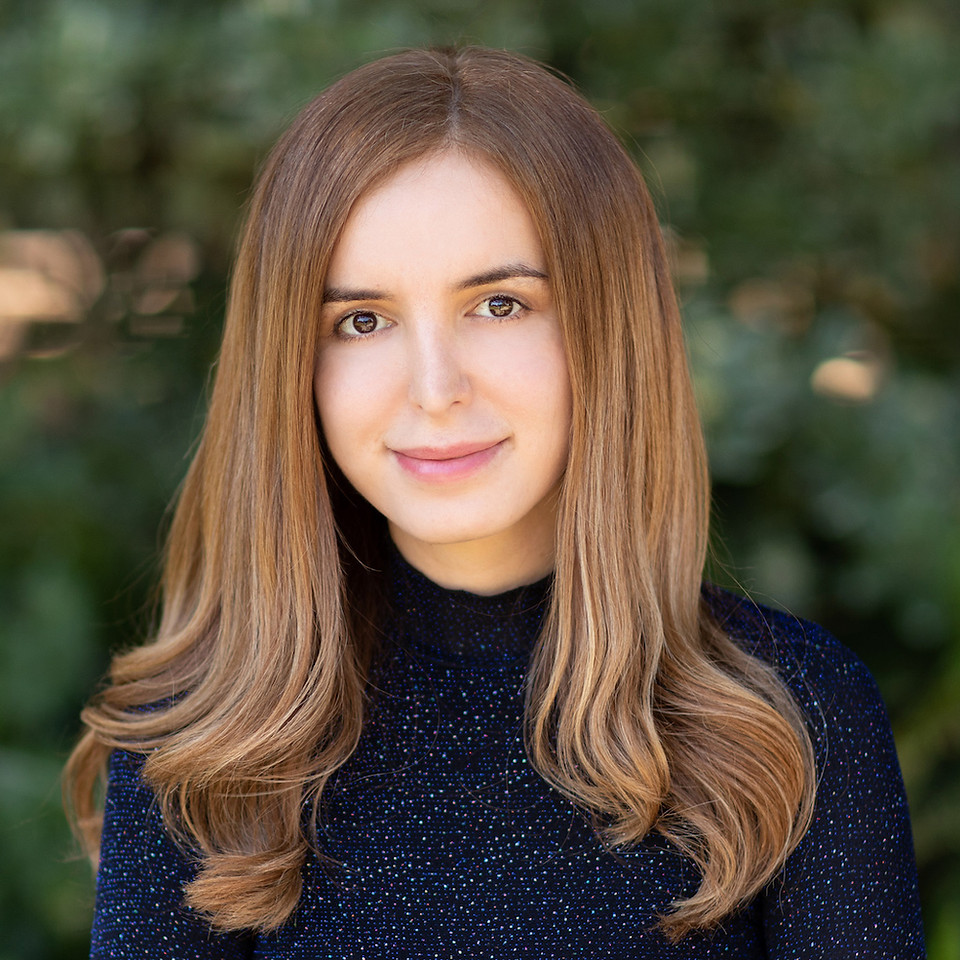
Azalia MirhoseiniStanford / Ricursive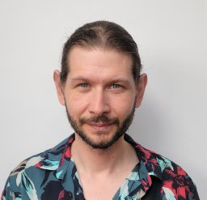
Alexander ToshevApple ML Research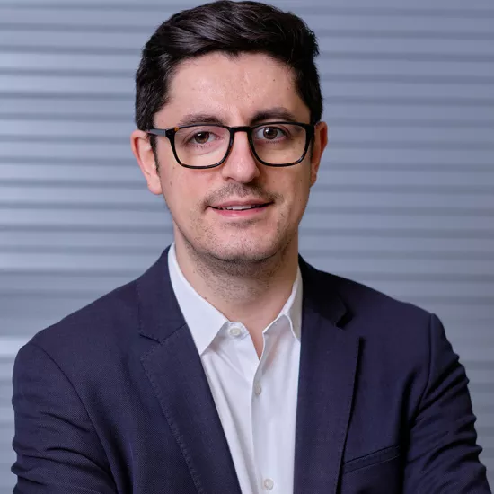
Igor GilitschenskiUniversity of Toronto Manling LiNorthwestern
Manling LiNorthwestern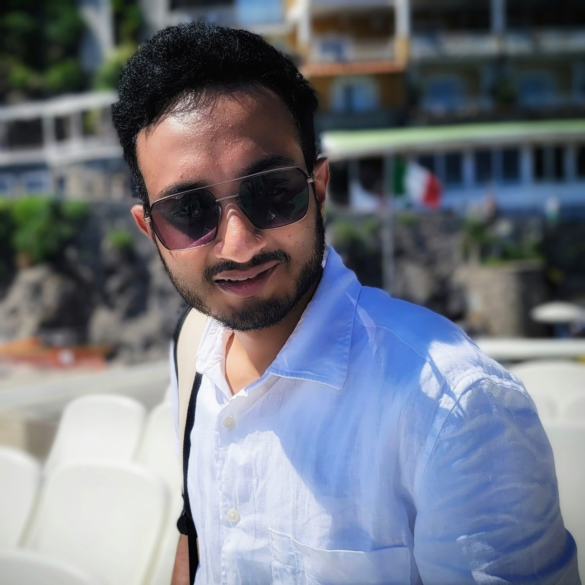
Kashyap ChittaKESAI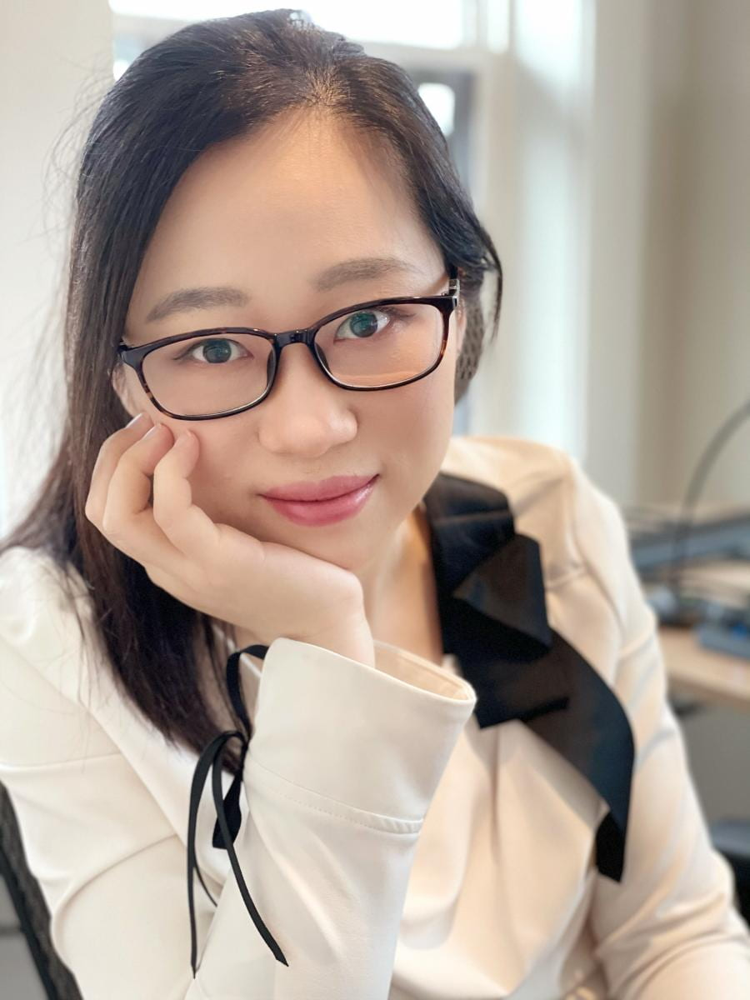
Chuchu FanMIT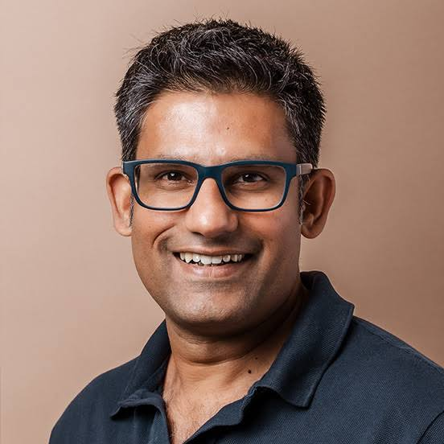
Vijay BadrinarayananWayve Kristen GraumanUT Austin
Kristen GraumanUT AustinResearchers across academia and industry
 Mozhgan Nasr
Mozhgan Nasr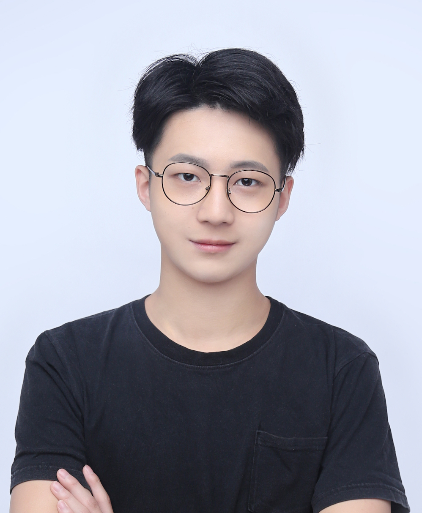
Yimu WangRBC / Waterloo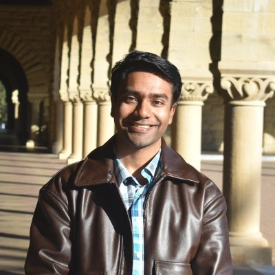
Milan GanaiStanford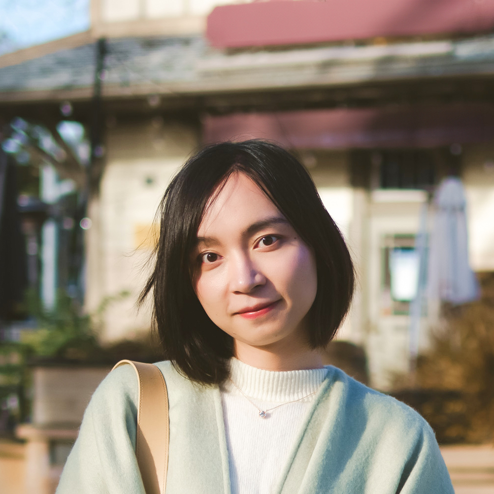
Jiayuan MaoAmazon FAR / Penn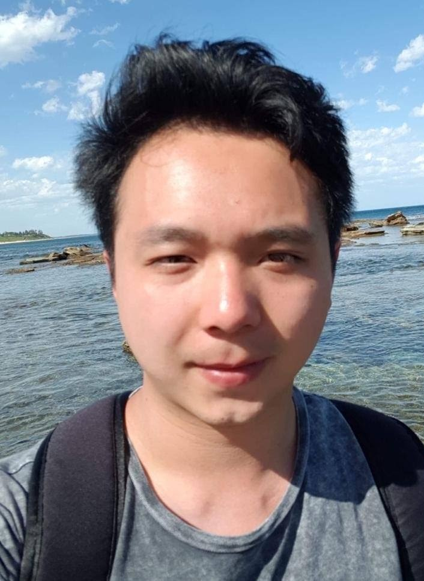
William ZhiUniversity of Sydney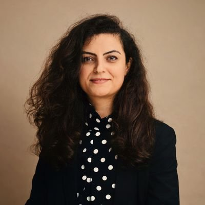
Elahe AraniWayve / TU/e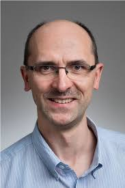
Krzysztof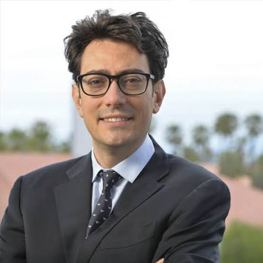
Marco PavoneStanford / NVIDIAVision-language(-action) models are moving beyond describing the world to perceiving, reasoning, and acting within it. VLM4RWD focuses on the foundations required to deploy these systems responsibly, reliably, and at scale.
We welcome sponsorship at the levels below, and are happy to tailor a package to your organization’s priorities—such as supporting the Best Paper Award or student participation.
All recognition and benefits are subject to applicable NeurIPS policies and final agreement with the organizing committee.